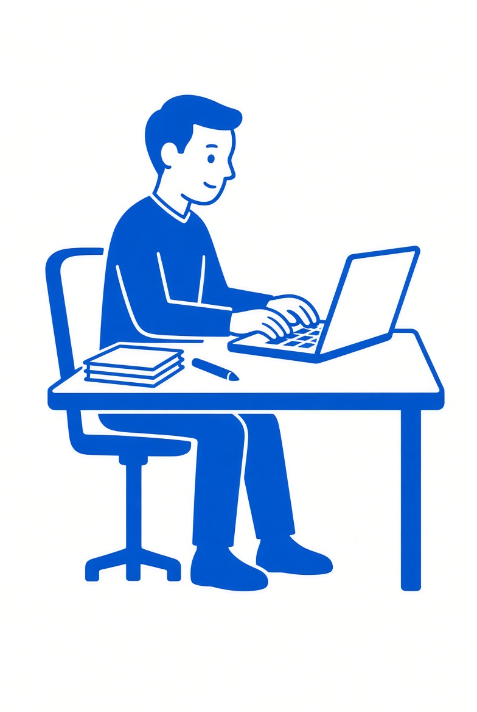
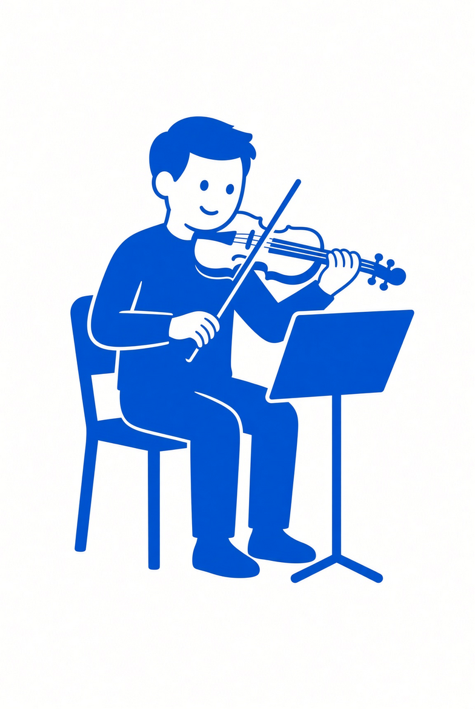

maken
to make
regelmatigrang 52Technology & toolsgetekend
- Scene
- one adult sits at a plain table, holding a small wooden box together with both hands; a hammer lies beside three loose planks and a few nails, and one nail stands half driven into the box. The box is clearly being assembled out of the planks.
- Must read
- a new box being made from loose planks and nails.
- Avoid
- a screwdriver and a broken chair leg (repareren); a pot on a stove and a spoon (koken); a brush on paper (tekenen); the finished box held up to show it.
- Alt text
- Iemand zit aan een tafel en zet met een hamer een kistje in elkaar uit losse planken.
maken.png · rang 52 · A0 regelmatig · lexicon woorden.tsv

werken
to work
regelmatigrang 152Work & jobsgetekend
- Scene
- one adult sits at a plain desk seen from the side, both hands on the keyboard of an open laptop, eyes on the screen; a stack of papers and a pen beside it, a plain office chair. No second person, and the screen shows no text.
- Must read
- a person occupied at a desk with their work in front of them.
- Avoid
- a person digging with a spade (graven); a person at a workbench (maken); a person asleep at the desk; a boss pointing at the door.
- Alt text
- Iemand zit achter een bureau met beide handen op het toetsenbord van een laptop.
werken.png · rang 152 · A0 regelmatig · lexicon woorden.tsv

gebruiken
to use
regelmatigrang 216Abstract & generalgetekend
- Scene
- one adult stands at a kitchen counter, gripping a plain screwdriver with one hand, the flat tip already seated in the slot of a single screw in a small wooden board, that elbow drawn back to turn it. The other hand presses the board flat on the counter. No hammer, no loose parts.
- Must read
- one hand turning a screwdriver in a screw.
- Avoid
- the screwdriver lying untouched beside the board (maken); a screwdriver over a broken chair leg (repareren); a hand held out with the screwdriver on its palm (geven); one adult seated at a laptop (werken).
- Alt text
- Een volwassene staat aan het aanrecht en draait met een schroevendraaier een schroef in een plank.
gebruiken.png · rang 216 · A0 regelmatig · lexicon woorden.tsv

spelen
to play
regelmatigrang 218Arts & mediagetekend
- Scene
- one child crouches on the floor with both hands out, pushing a small round ball away from the fingertips; the ball sits halfway between the child's hands and the rim of an upturned cup two hand-widths away. The child grins at the ball. Plain floor, nothing else in the picture.
- Must read
- a child pushing a toy ball across the floor with both hands.
- Avoid
- an adult at a workbench with planks and a hammer (maken); a child bent over an open book (leren); a child asleep on a mat; a bat and an open field.
- Alt text
- Een kind hurkt op de grond en duwt met beide handen een kleine bal over de vloer.
spelen.png · rang 218 · A0 regelmatig · lexicon woorden.tsv

spelen (muziek)
to play (an instrument)
regelmatigrang 218Arts & mediagetekend
- Scene
- One adult sits on a plain chair holding a violin under the chin, the bow drawn across the strings at the middle of its length, the left hand stopping a string on the neck. A music stand stands in front of them with a single sheet on it, blank. Nothing else in the picture.
- Must read
- a bow drawn across a violin held under the chin.
- Avoid
- a child pushing a toy ball across the floor (spelen); a child singing with an open mouth (zingen); a hand on a radio dial (luisteren); a guitar leaning in a corner with no player.
- Alt text
- Een volwassene zit op een stoel en strijkt met de stok over de snaren van een viool onder de kin.
spelen-muziek.png · rang 218 · A0 regelmatig · lexicon woorden.tsv

zorgen
to take care (of)
regelmatigrang 223Abstract & generalgetekend
- Scene
- one adult kneels beside a small child seated on a low stool, wrapping a blanket around the child's shoulders with both hands; a glass of water stands on a low table nearby. The adult leans in and looks at the child, and the child looks back.
- Must read
- two people, one wrapping a blanket around the other.
- Avoid
- a child alone bent over a book (leren); one adult at a workbench (maken); two people passing the glass between them (geven); a person holding their head in their hands.
- Alt text
- Een volwassene knielt bij een kind op een krukje en slaat met beide handen een deken om de schouders.
zorgen.png · rang 223 · A0 regelmatig · lexicon woorden.tsv

leren
to learn
regelmatigrang 247Education & learninggetekend
- Scene
- one child sits at a plain table, seen from the side, both hands open on a large picture book showing two unlettered shapes, eyes down on the page; a grown adult stands behind the child's shoulder, leaning in, and one finger points at the page. No desk, no laptop, no other furniture.
- Must read
- two people bent over an open book, one pointing at the page.
- Avoid
- one adult alone at a laptop (werken); a person at a workbench with planks (maken); a hand turning a screwdriver (gebruiken); a child pushing a ball on the floor (spelen).
- Alt text
- Een kind zit aan een tafel voor een open boek; een volwassene staat erachter en wijst naar de bladzijde.
leren.png · rang 247 · A0 regelmatig · lexicon woorden.tsv